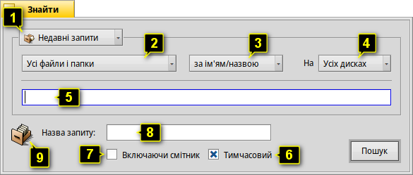
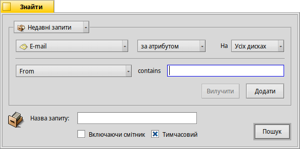
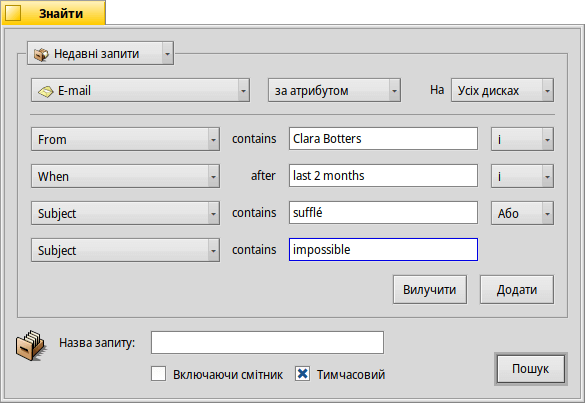
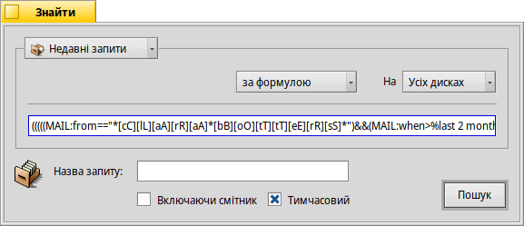
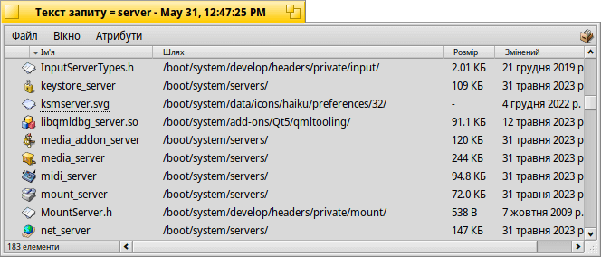

| Індекс |
|
Вікно «Знайти» Базові запити – «за ім'ям/назвою» Розширені запити – «за атрибутом» Дуже розширені запити – «за формулою» Вікно результатів Шаблони запиту |
Запити (Queries)
Запит – це пошук файлів на основі їхніх атрибутів, який можна виконати у файловому менеджері Tracker або у терміналі. Запити зберігаються у /boot/home/queries/ і за замовчуванням зберігаються протягом семи днів, перш ніж будуть видалені. Зверніть увагу, що це не статичні списки результатів Вашого пошуку, а формули запитів, які запускають новий пошук щоразу, коли Ви їх відкриваєте.
Навіть краще, Вам не потрібно робити подвійний клік, щоб повторити запит. Ви можете деталізувати збережений запит, як і будь-яку іншу папку, зробивши на ньому правий клік миші та переміщуючись по підменю.
 Вікно «Знайти»
Вікно «Знайти»
Ви можете запустити запит, вибравши пункт меню або у меню панелі задач Deskbar або у будь-якому вікні файлового менеджера Tracker або з робочого столу (який фактично є повноекранним вікном Tracker). Клавішами швидкого доступу є комбінація ALT F. З'явиться вікно «Знайти»:
Виберіть нещодавні або збережені запити або збережіть поточні параметри пошукового запиту як Шаблон Запиту.
Конкретизуйте Ваш пошук від до певних типів файлів.
- Виберіть критерій за яким буде виконуватися пошук:
- – базовий пошук за назвою файлу або папки;
- – розширений пошук, Ви задаєте умови пошуку для одного або кількох атрибутів;
- – ще більш розширений пошук, Ви можете точно вказати умови складного запиту.
Виберіть, на яких дисках шукати.
Введіть текст пошукового запиту або умови пошуку.
Зніміть позначку з опції , якщо Ви не хочете, щоб цей запит самознищився через 7 днів.
Поставте позначку, якщо пошук необхідно виконувати .
При необхідності введіть назву для цього запиту, якщо Ви хочете його зберегти.
Ви можете перетягнути значок у будь-яке місце, щоб зберегти запит. Якщо Ви зробите це правою кнопкою миші, з'явиться можливість зберегти запит як шаблон.
Базові запити – «за ім'ям/назвою»
Якщо Ви просто хочете знайти усі файли та папки на підключених дисках, які відповідають певному шаблону, просто залиште критерій пошуку , введіть текст пошукового запиту (умови пошуку) у текстове поле вводу та натисніть ENTER.
Розширені запити – «за атрибутом»
Ви можете створювати складніші запити, шукаючи за атрибутами певних типів файлів. Щоб це працювало, ці атрибути мають бути проіндексовані.
Ви починаєте зі змінювання типу файлу з на, наприклад, та встановлення критерію пошуку .
У результаті, з'явиться список який розкривається ліворуч від текстового поля вводу та кнопки і під ними. У списку Ви зможете вибирати атрибут у якому буде здійснюватися пошук. За допомогою кнопок і Ви можете додавати до запиту додаткові атрибути або вилучати їх. Ці атрибути можуть бути логічно пов'язані між собою за допомогою операндів «і/або».
Для прикладу розглянемо запит на електронну пошту:
Так виглядає вікно пошуку, коли Ви шукаєте усі електронні листи, надіслані Вам Clara Botters за останні два місяці, у темі яких були слова «sufflé» або «impossible».
Як Ви бачите, пошук за атрибутами на основі часу підтримує деякі корисні фрази: окрім «2 months», Ви можете використовувати «сьогодні», «вчора», «понеділок» або «минулого понеділка» (понеділок минулого тижня) або «останні 2 хвилини/години/дні/тижні».
Хороший спосіб скоротити кількість результатів пошуку.
Дуже розширені запити – «за формулою»
Введення запиту «за формулою» вручну – це дуже складно і непрактично. Але все ж у нього є свої переваги.
Візьмемо наведений вище запит на пошук у листах Клари з критерієм , що стосуються «sufflé» і таке інше. Якщо усі атрибути та умови пошуку вже визначені, спробуйте переключитися в режим і Ви отримаєте такий текстовий рядок пошукового запиту:
Ще раз, у вигляді тексту, відредагованого для зручності читання:
(((((MAIL:from=="*[cC][lL][aA][rR][aA] [oO][sS][wW][aA][lL][dD]*")
&&(MAIL:when>=%2 months%))
&&(MAIL:subject=="*[sS][uU][fF][fF][lL][éÉ]*"))
||(MAIL:subject=="*[iI][mM][pP][oO][sS][sS][iI][bB][lL][eE]*"))
&&(BEOS:TYPE=="text/x-email"))
Яка користь від цього?
Ви можете зробити копію і вставити рядок в електронний лист, форум або IRC, щоб інші могли його використовувати або відладити.
Ви можете використовувати цей метод для побудови запиту у режимі , а потім переключитися у режим щоб комфортно згенерувати рядок пошуку. Взятий в одинарні лапки, цей рядок можна використовувати з командою запиту в терміналі.
Ви можете коригувати, вносити поправки у свій запит, вставляючи дужки, де це необхідно, робити частини чутливими до регістру або заперечувати логічні комбінації, змінюючи, наприклад, «==» на «!=» для «NOT», «AND». Все, що Вам потрібно – це базове розуміння регулярних виразів і, можливо, деякі основи написання сценаріїв.
Вікно результатів
Після виконання пошукового запиту вікно пошуку буде замінено вікном результатів. Ось приклад пошуку за запитом «server»:
Окрім сірого фону, вікна результатів виглядають так само, як і будь-яке інше вікно Tracker. Варто звернути увагу на деякі моменти:
Ви можете відкрити розташування файлу або папки, зробивши подвійний клік на атрибуті «Шлях».
За допомогою пункту меню або комбінації клавіш ALT G Ви повернетеся до вікна «Знайти» для уточнення запиту.
Запит активний, тобто якщо файл, який відповідає Вашим критеріям пошуку, з'являється або зникає з Вашої системи, ця зміна відображається в результатах пошуку у режимі реального часу.
Ви можете зробити зрозумілий макет розташування атрибутів у результатах пошуку для певного типу файлів. Відкрийте папку з файлами того типу, для якого Ви хочете створити шаблон і впорядкуйте атрибути так, як повинні бути представлені результати запиту. Зробіть копію макета за допомогою пункту меню .
Відкрийте каталог /boot/home/config/settings/Tracker/DefaultQueryTemplates, створіть нову папку з назвою «group/filetype», замінивши слеш на підкреслення, наприклад, «audio_x-mp3». Перейдіть у нову папку і вставте до неї макет, копію якого Ви зробили раніше, за допомогою пункту меню .
Шаблони запиту
При подвійному кліку по збереженому запиту починається його виконання і одразу відкривається вікно з результатами. Може статися, що Ви не захочете шукати саме з такими параметрами а використаєте збережений запит як відправну точку, щоб лише злегка підправити формулу.
Скориставшись пунктом меню (дивіться (1) на скриншоті вгорі) або перетягнувши значок (9) у будь-яке місце правою кнопкою миші, Ви можете створити саме такий шаблон. Подвійний клік по шаблону відкриє не вікно результатів, а панель «Знайти», де Ви зможете швидко змінювати текст пошукового запиту або додавати/видаляти атрибути.
Де б Ви не зберігали шаблони пошукових запитів, вони відображатимуться у списку недавніх запитів на панелі «Знайти».